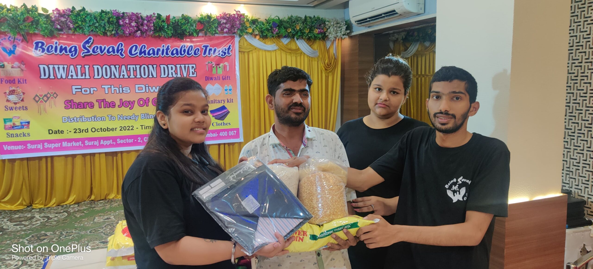
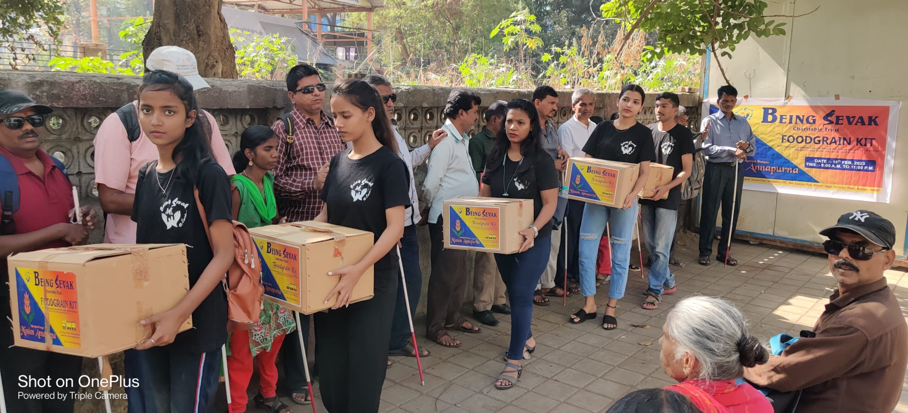
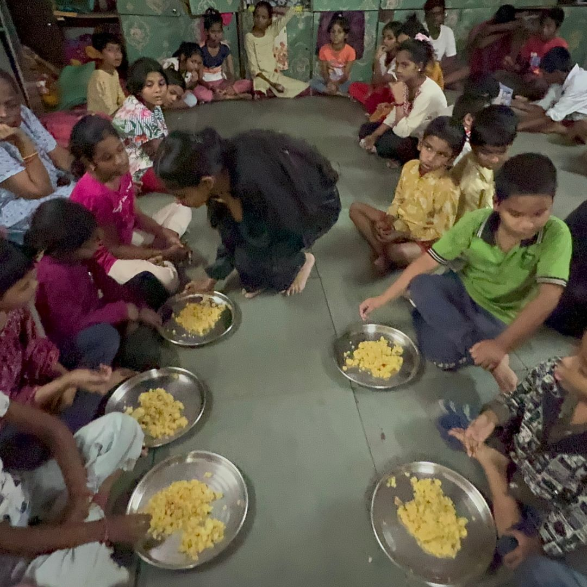
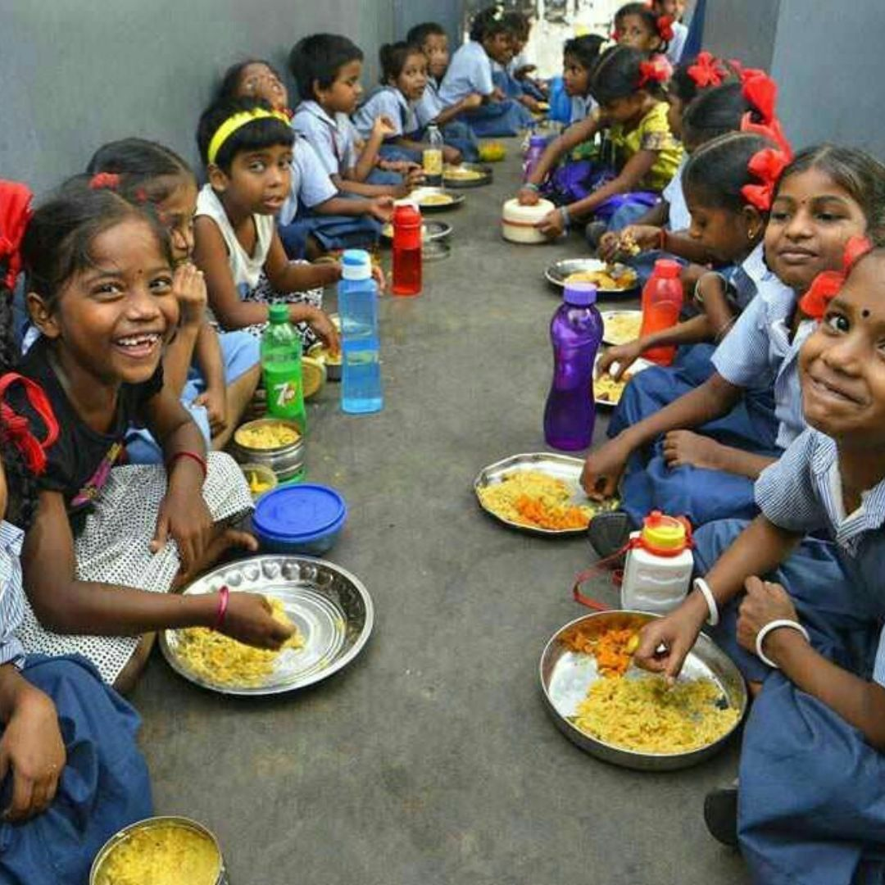
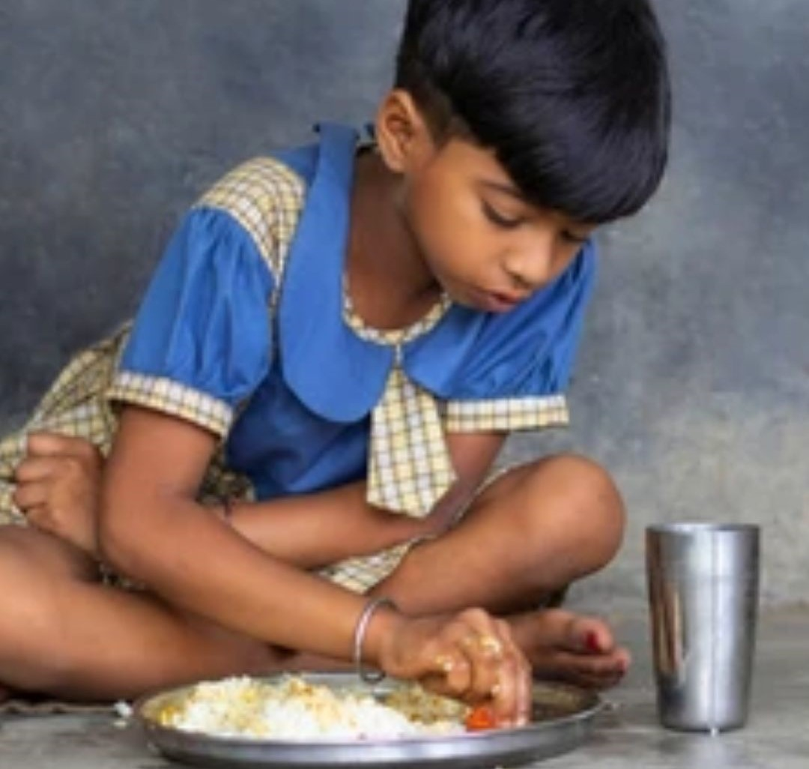
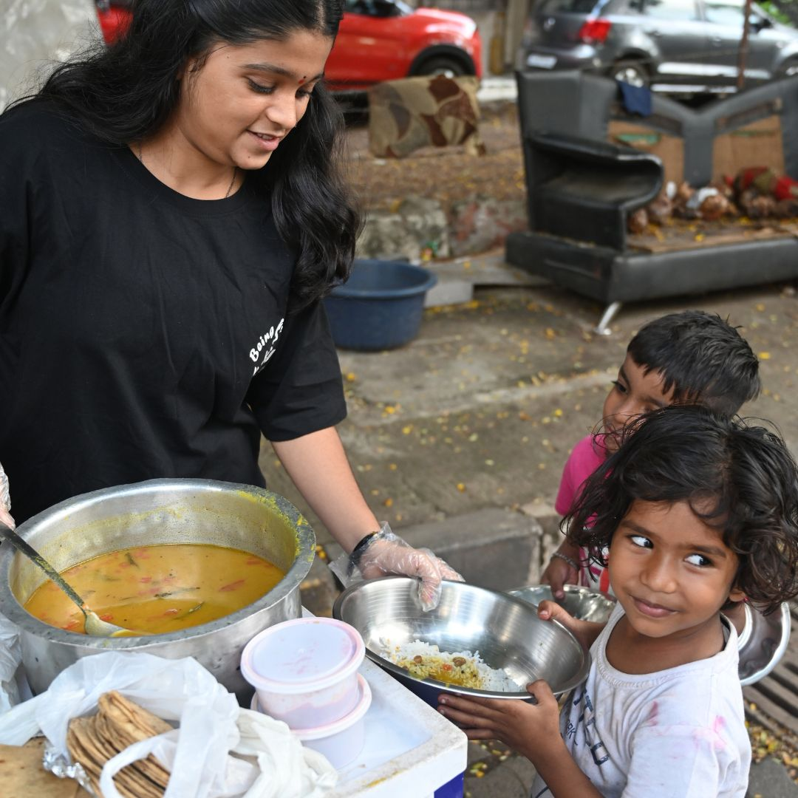
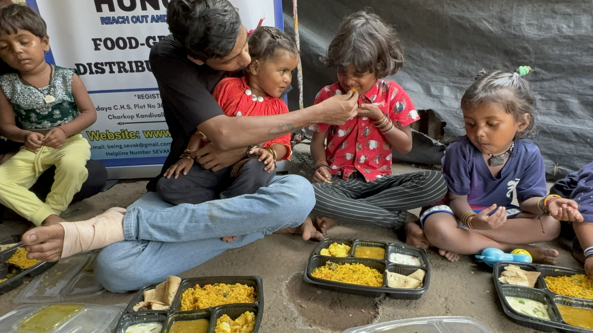
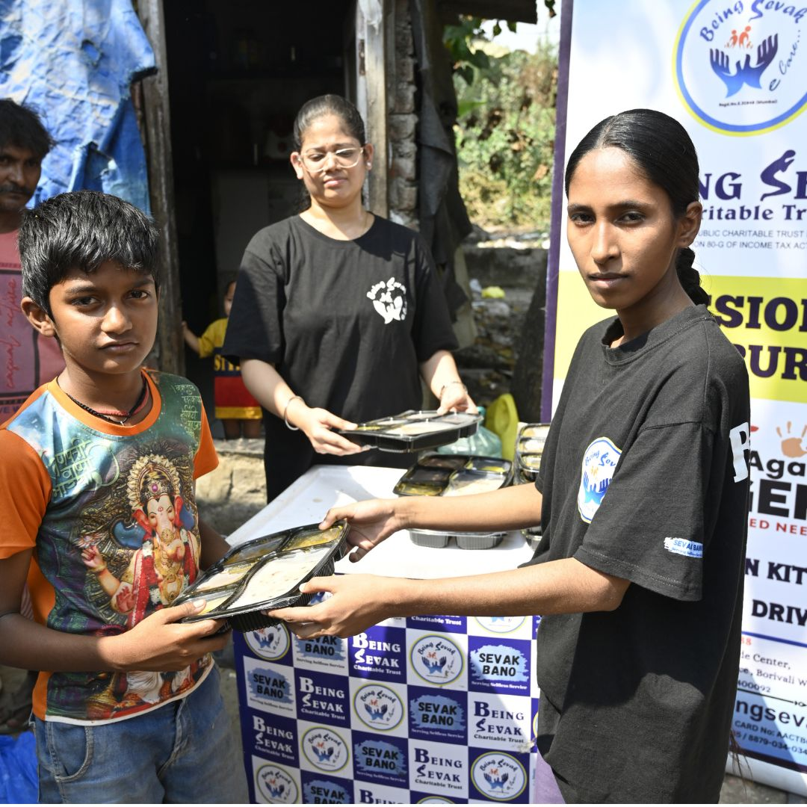
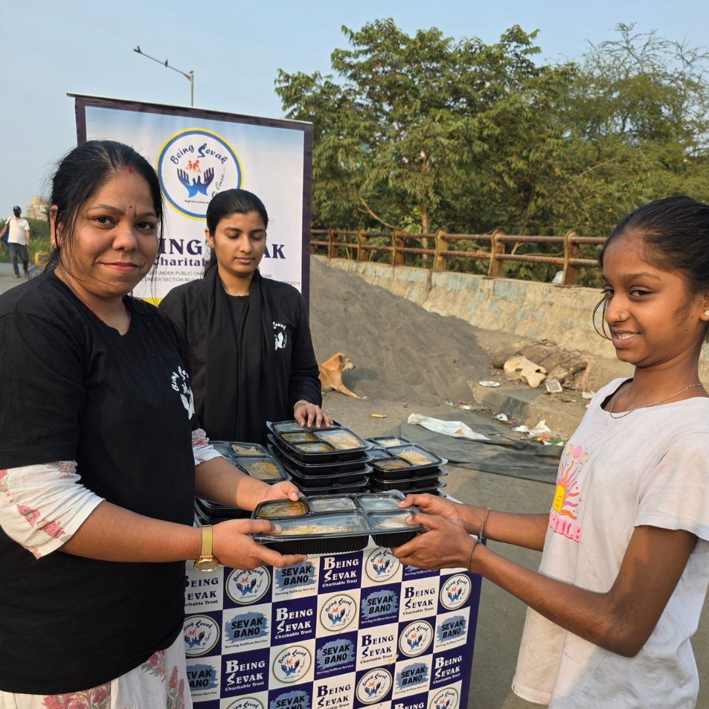

From hot meals to nutrition kits, every initiative is a step toward fighting hunger and spreading humanity with dignity, love, and care.
Annapurna Kits are thoughtfully prepared with essential grocery items such as rice, flour, pulses, oil, sugar, and daily nutrition supplies to support families facing difficult times with dignity and care.
These kits are distributed during emergency relief drives, poverty support initiatives, and community welfare programs to ensure that no family sleeps hungry.
The kits are also extended to dedicated life supporters and humanitarian contributors who continuously stand with society during times of need, as a gesture of gratitude and community solidarity.
Support Annapurna Mission







Sevak Roti Drive is dedicated to distributing freshly prepared rotis and essential food items to underprivileged communities across various locations.
Our volunteers work tirelessly to ensure that families facing food insecurity receive healthy and respectful support regularly.
Our Sevak Meal Drive focuses on distributing fresh and hygienic meals to needy families, laborers, senior citizens, and homeless individuals. Through this initiative, we ensure that no person sleeps hungry.
Every meal served carries compassion, hope, and humanity. Volunteers actively participate in meal preparation, packaging, and distribution.




During festivals, celebrations, and special community events, we organize lunch and sweets distribution programs to spread happiness among children, elderly people, and families in need.


Through the Sevak Snacks Drive, we distribute biscuits, juice, sandwiches, fruits, and healthy snacks to children, workers, and underprivileged people in public areas and communities.
We also provide refreshing buttermilk to help people stay hydrated and protected from the extreme heat, while promoting care, compassion, and community well-being.
“Aadhar initiative is doing amazing work by helping needy families with food support.”
“Very transparent and impactful work. Happy to support this mission.”
“They truly bring hope to families struggling for basic needs.”
Get 50% Tax Exemption on your donation under Section 80G of Income Tax Act 1961